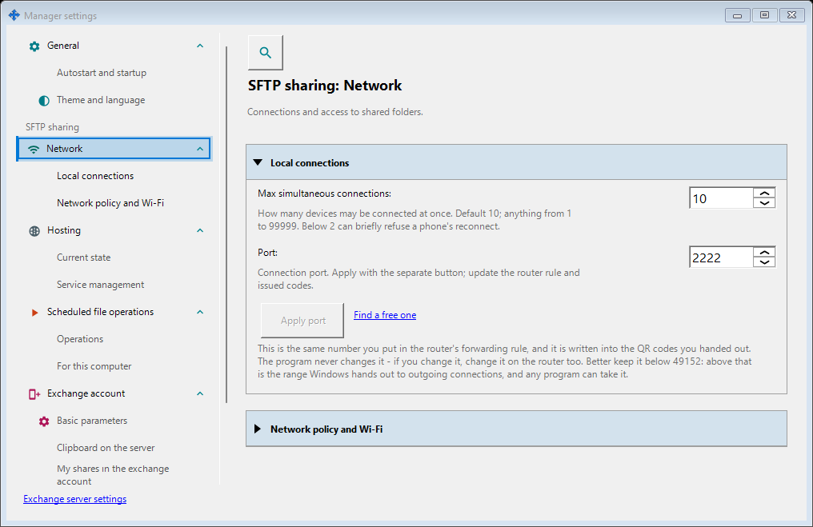
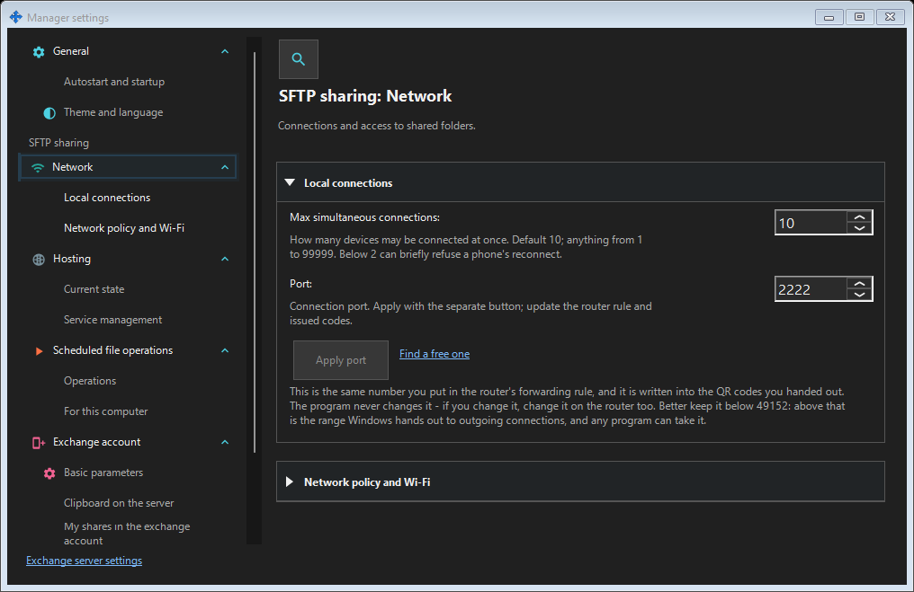

SFTP sharing settings
What this is for
Configure the SFTP listener, connection limit, LAN-only policy and interactive or Windows-service hosting here. These settings affect local folder sharing, not the exchange-server listener or your remote account.


In this order
Open Manager settings from the manager or tray and choose the SFTP sharing group (Network, Hosting). If sharing is disabled, enable it explicitly through the existing confirmation and administrator prompt. Opening the window never enables or starts sharing. Type a port and choose Apply; switching windows preserves the draft. While a port draft is pending, closing asks: Yes applies it, No discards it, Cancel keeps editing. A failed apply keeps the draft. Changing a live port requires new connection codes and router forwarding.
The elements
SFTP sharing settings
Configure the SFTP listener, connection limit, LAN-only policy and interactive or Windows-service hosting here. These settings affect local folder sharing, not the exchange-server listener or your remote account. Open Manager settings from the manager or tray and choose the SFTP sharing group (Network, Hosting). If sharing is disabled, enable it explicitly through the existing confirmation and administrator prompt. Opening the window never enables or starts sharing. Type a port and choose Apply; switching windows preserves the draft. While a port draft is pending, closing asks: Yes applies it, No discards it, Cancel keeps editing. A failed apply keeps the draft. Changing a live port requires new connection codes and router forwarding.
SFTP sharing settings
Configure the SFTP listener, connection limit, LAN-only policy and interactive or Windows-service hosting here. These settings affect local folder sharing, not the exchange-server listener or your remote account. Open Manager settings from the manager or tray and choose the SFTP sharing group (Network, Hosting). If sharing is disabled, enable it explicitly through the existing confirmation and administrator prompt. Opening the window never enables or starts sharing. Type a port and choose Apply; switching windows preserves the draft. While a port draft is pending, closing asks: Yes applies it, No discards it, Cancel keeps editing. A failed apply keeps the draft. Changing a live port requires new connection codes and router forwarding.
Manager settings · SFTP sharing settings · Exchange server settings